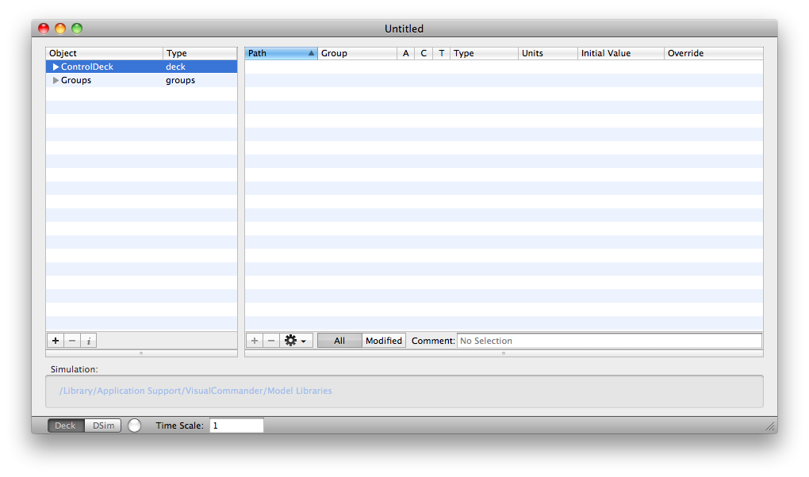

ControlDeck Manager allows you to work with Control Decks much like you work with DSim modules in DSim Manager.
Control Deck provides the means to implement a control system in either a standalone mode or in conjunction with a DSim simulation. Users create subclasses of modules, then link those with the core ControlDeck C++ library. The links between ControlDeck variables and simulation variables is defined in a text setup file. This setup file contains the location of the Simulation, if applicable, and defines modules that need instantiation, assigns modules and simulations variables to groups. It must also provide variable attribute overrides and module setup commands. Setup files can become quite complex, and since every identifier is manually entered, are prone to user key entry errors.
ControlDeck Manager removes the need to manually create setups files, and by supplying objects loaded from the module subclasses and simulation, minimizes the possibility of key entry errors. It also provides fingertip access to virtually every possible setting and value users might need in the assembly of a Control Deck.
The GUI offers two primary windows: the manifest, which shows all Control Deck modules installed in the user's system, and a ControlDeck window where the users defines a Control Deck setup file. Users create ''Systems'' in the GUI, then drag modules from the manifest window into a System to instantiate them. Each module displays all its variables, and users can provide override values and possible modify the telemetry or command settings. The GUI also makes it easy to see which variables have been modified. Likewise, by selecting the simulation in the left outline view, the Simulation variables can be placed into the Control Deck.
The ControlDeck window has two modes: ControlDeck and DSim. When DSim is selected, the window displays the same content as is currently provided by DSim Manager, and users can view and modify the simulation.
ControlDeck Manager provides users with a tool that speeds the creation of a Control Deck while reducing the chance of operator error to virtually zero.The floating manifest lists ControlDeck modules that are available in your bundles.

The builder allows you to assemble ControlDecks.
Copyright 2011  , all rights reserved.
, all rights reserved.
Return to ControlDeckManager Help Home